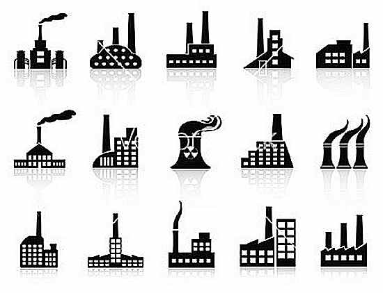

先教科书一波（“千万别被吓到”），教科书上关于多进程和多线程解释为
进程是资源分配的最小单位，线程是CPU调度的最小单位据说这句话拿去考试,改卷老师一定会给高分，但是还是嘚深入了解一下
线程的定义：
线程是操作系统能够进行运算调度的最小单位。它被包含在进程之中，是进程中的实际运作单位。
一条线程指的是进程中一个单一顺序的控制流，一个进程中可以并发多个线程，
每条线程并行执行不同的任务。一个线程是一个execution context（执行上下文）
即一个cpu执行时所需要的一串指令。线程的工作方式类比：
假设你正在读一本书，没有读完，你想休息一下，但是你想在回来时恢复到当时读的具体进度。
有一个方法就是记下页数、行数与字数这三个数值，这些数值就是execution context。
如果你的室友在你休息的时候，使用相同的方法读这本书。
你和她只需要这三个数字记下来就可以在交替的时间共同阅读这本书了。
线程的工作方式与此类似。CPU会给你一个在同一时间能够做多个运算的幻觉，实际上它在每个运算上只花了极少的时间，
本质上CPU同一时刻只干了一件事。它能这样做就是因为它有每个运算的execution context。
就像你能够和你朋友共享同一本书一样，多任务也能共享同一块CPU。进程的定义：
一个程序的执行实例就是一个进程。每一个进程提供执行程序所需的所有资源。（进程本质上是资源的集合）
一个进程有一个虚拟的地址空间、可执行的代码、操作系统的接口、安全的上下文（记录启动该进程的用户和权限等等）
唯一的进程ID、环境变量、优先级类、最小和最大的工作空间（内存空间），还要有至少一个线程。
每一个进程启动时都会最先产生一个线程，即主线程。然后主线程会再创建其他的子线程。文邹邹的讲一下区别（如果你困了，请直接跳至图解进程线程）
- 同一个进程中的线程共享同一内存空间，但是进程之间是独立的。
- 同一个进程中的所有线程的数据是共享的（进程通讯），进程之间的数据是独立的。
- 对主线程的修改可能会影响其他线程的行为，但是父进程的修改（除了删除以外）不会影响其他子进程。
- 线程是一个上下文的执行指令，而进程则是与运算相关的一簇资源。
- 同一个进程的线程之间可以直接通信，但是进程之间的交流需要借助中间代理来实现。
- 创建新的线程很容易，但是创建新的进程需要对父进程做一次复制。
- 一个线程可以操作同一进程的其他线程，但是进程只能操作其子进程。
- 线程启动速度快，进程启动速度慢（但是两者运行速度没有可比性）。
再配上一张图来对比一下

有趣的图解一波程序执行的线程与进程的概念
- 计算机的核心是CPU，它承担了所有的计算任务。它就像一座工厂，时刻在运行。

- 假定工厂的电力有限，一次只能供给一个车间使用。也就是说，一个车间开工的时候，
其他车间都必须停工。背后的含义就是，单个CPU一次只能运行一个任务。
- 进程就好比工厂的车间，它代表CPU所能处理的单个任务。任一时刻，CPU总是运行一个进程
其他进程处于非运行状态.
 - 一个车间里，可以有很多工人。他们协同完成一个任务。

- 线程就好比车间里的工人。一个进程可以包括多个线程。
- 车间的空间是工人们共享的，比如许多房间是每个工人都可以进出的。
这象征一个进程的内存空间是共享的，每个线程都可以使用这些共享内存。
- 可是，每间房间的大小不同，有些房间最多只能容纳一个人，比如厕所。里面有人的时候
其他人就不能进去了。这代表一个线程使用某些共享内存时，其他线程必须等它结束，才能使用这一块内存
- 一个防止他人进入的简单方法，就是门口加一把锁。先到的人锁上门，后到的人看到上锁，就在门口排队
等锁打开再进去。这就叫”互斥锁”（Mutual exclusion，缩写 Mutex），防止多个线程同时读写某一块内存区域。
- 还有些房间，可以同时容纳n个人，比如厨房。也就是说，如果人数大于n，多出来的人只能在外面等着。
这好比某些内存区域，只能供给固定数目的线程使用。
- 这时的解决方法，就是在门口挂n把钥匙。进去的人就取一把钥匙，出来时再把钥匙挂回原处。
后到的人发现钥匙架空了，就知道必须在门口排队等着了。这种做法叫做”信号量”（Semaphore）
用来保证多个线程不会互相冲突。
不难看出，mutex是semaphore的一种特殊情况（n=1时）。也就是说，完全可以用后者替代前者。
但是，因为mutex较为简单，且效率高，所以在必须保证资源独占的情况下，还是采用这种设计。